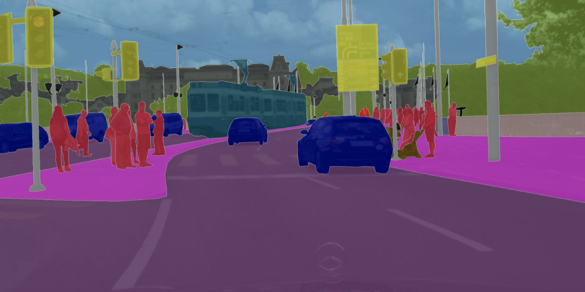
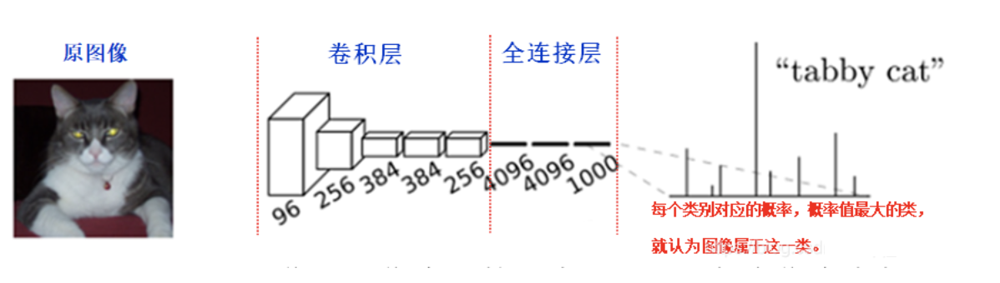
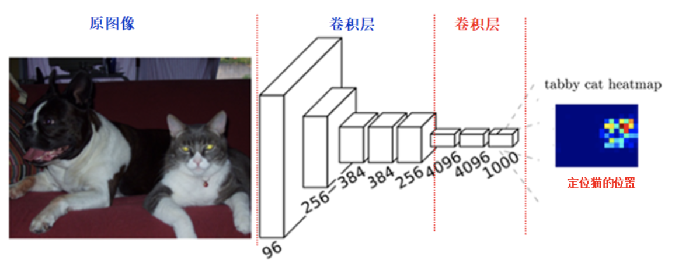
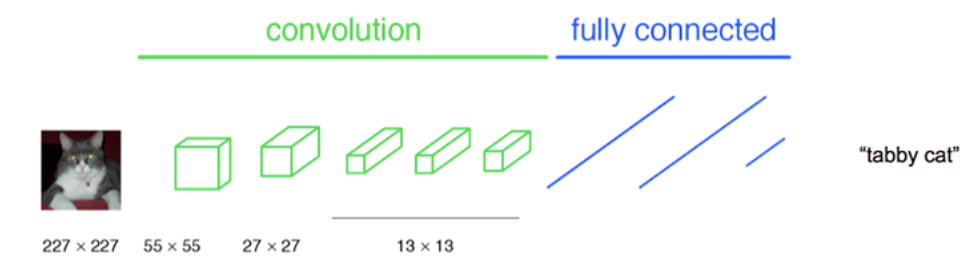
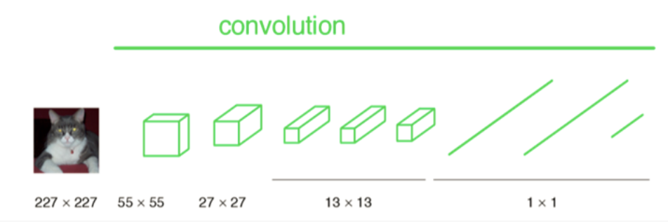
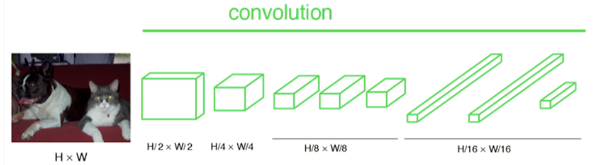
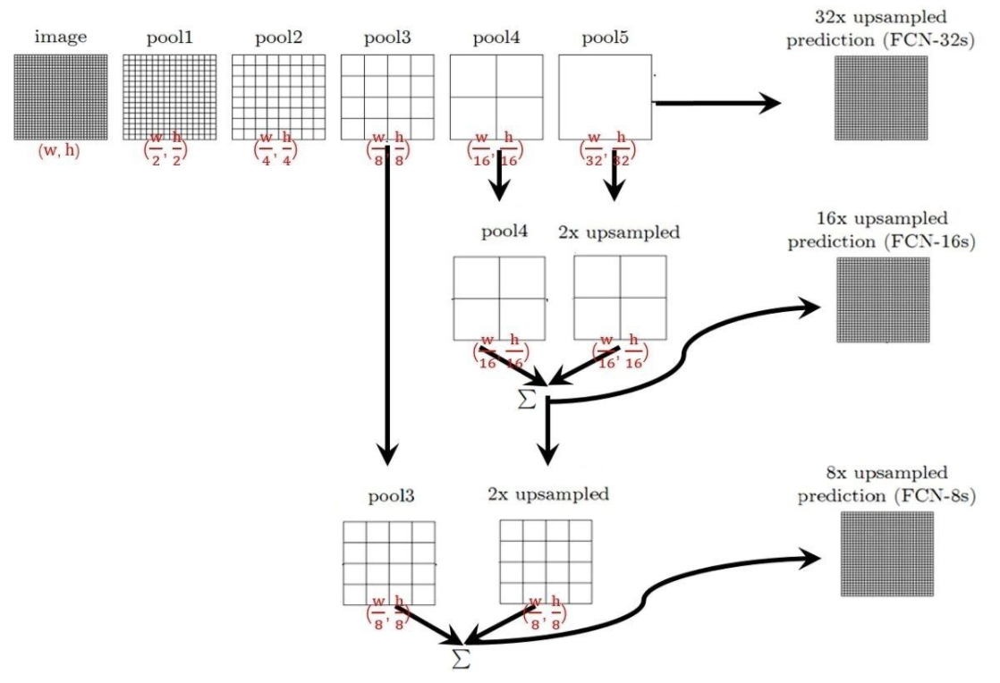
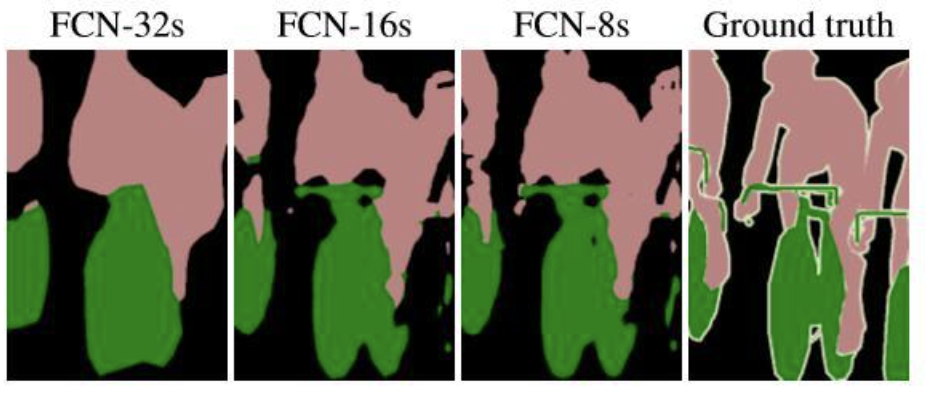
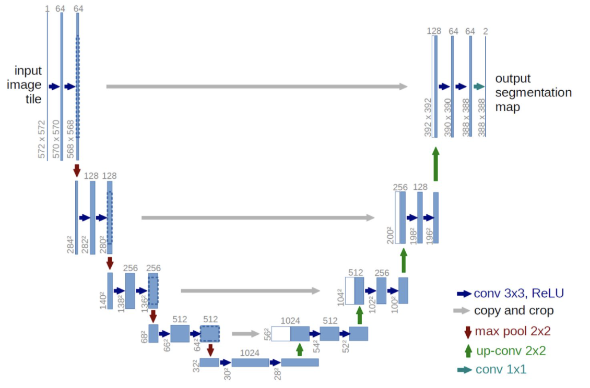

5.2 语义分割：FCN和UNet¶
学习目标
- 了解FCN的结构
- 了解FCN的上采样方法及跳层连接
- 掌握Unet网络结构

1.FCN网络¶
FCN（Fully Convolutional Networks） 用于图像语义分割，自从该网络提出后，就成为语义分割的基本框架，后续算法基本都是在该网络框架中改进而来。
对于一般的分类CNN网络，如VGG和Resnet，都会在网络的最后加入一些全连接层，经过softmax后就可以获得类别概率信息。

但是这个概率只能标识整个图片的类别，不能标识每个像素点的类别，所以这种全连接方法不适用于图像分割。
而FCN提出可以把后面几个全连接都换成卷积，这样就可以获得一张2维的feature map，后接softmax获得每个像素点的分类信息，从而解决了分割问题，如下图所示：

简而言之，FCN和CNN的区别就是：CNN卷积层之后连接的是全连接层；FCN卷积层之后仍连接卷积层，输出的是与输入大小相同的特征图。
1.1 网络结构¶
FCN是一个端到端，像素对像素的全卷积网络，用于进行图像的语义分割。整体的网络结构分为两个部分：全卷积部分和上采样部分。

1.1.1 全卷积部分¶
全卷积部分使用经典的CNN网络（以AlexNet网络为例），并把最后的全连接层换成卷积，用于提取特征。
- 在传统的Alex结构中，前5层是卷积层，第6层和第7层分别是一个长度为4096的一维向量，第8层是长度为1000的一维向量，分别对应1000个不同类别的概率。

- FCN将最后的3层转换为卷积层，卷积核的大小 (通道数，宽，高) 分别为 (4096,1,1)、(4096,1,1)、(1000,1,1)，虽然参数数目相同，但是计算方法就不一样了，这时还可使用预训练模型的参数。

- CNN中输入的图像固定成227x227大小，第一层pooling后为55x55，第二层pooling后图像大小为27x27，第五层pooling后的图像大小为13x13, 而FCN输入的图像是H*W大小，第一层pooling后变为原图大小的½，第二层变为原图大小的¼，第五层变为原图大小的⅛，第八层变为原图大小的1/16，如下所示：

- 经过多次卷积和pooling以后，得到的图像越来越小，分辨率越来越低。对最终的特征图进行upsampling，把图像进行放大到原图像的大小，就得到原图像的分割结果。
1.1.2 上采样部分¶
上采样部分将最终得到的特征图上采样得到原图像大小的语义分割结果。
在这里采用的上采样方法是反卷积（Deconvolution），也叫做转置卷积（Transposed Convolution）：
- 反卷积是一种特殊的正向卷积
- 通俗的讲，就是输入补0+卷积。先按照一定的比例通过补0来扩大输入图像的尺寸，再进行正向卷积即可。
如下图所示：输入图像尺寸为3x3，卷积核kernel为3x3，步长strides=2，填充padding=1

假设反卷积的输入是n x n ，反卷积的输出为mxm ，padding=p，stride=s，kernel_size = k。
那么此时反卷积的输出就为：
m = s(n-1) + k -2p

与正向卷积不同的是，要先根据步长strides对输入的内部进行填充，这里strides可以理解成输入放大的倍数，而不能理解成卷积移动的步长。
这样我们就可以通过反卷积实现上采样。
1.2 跳层连接¶
如果只利用反卷积对最后一层的特征图进行上采样的到原图大小的分割，由于最后一层的特征图太小，会损失很多细节。因而提出增加Skips结构将最后一层的预测（有更富的全局信息）和更浅层（有更多的局部细节）的预测结合起来。

那么：
-
对于FCN-32s，直接对pool5 feature进行32倍上采样获得32x upsampled feature，再对32x upsampled feature每个点做softmax prediction获得32x upsampled feature prediction（即分割图）。
-
对于FCN-16s，首先对pool5 feature进行2倍上采样获得2x upsampled feature，再把pool4 feature和2x upsampled feature逐点相加，然后对相加的feature进行16倍上采样，并softmax prediction，获得16x upsampled feature prediction。
-
对于FCN-8s，首先进行pool4+2x upsampled feature逐点相加，然后又进行pool3+2x upsampled逐点相加，即进行更多次特征融合。具体过程与16s类似，不再赘述。
下面有一张32倍，16倍和8倍上采样得到的结果图对比：

可以看到随着上采样做得越多，分割结果越来越精细。
1.3 总结¶
- 优点
端到端的，可以接受任意大小的输入图像尺寸，比较高效。
- 局限性
得到的结果还是不够精细。进行8倍上采样虽然比32倍的效果好了很多，但是上采样的结果还是比较模糊的，对图像中的细节不敏感。而且在对各个像素进行分类时，没有考虑像素与像素之间的关系。
2.Unet网络¶
Unet网络是建立在FCN网络基础上的，它的网络架构如下图所示，总体来说与FCN思路非常类似。

整个网络由编码部分（左） 和 解码部分（右）组成，类似于一个大大的U字母，具体介绍如下：
1、编码部分是典型的卷积网络架构：
- 架构中含有着一种重复结构，每次重复中都有2个 3 x 3卷积层、非线性ReLU层和一个 2 x 2 max pooling层（stride为2）。（图中的蓝箭头、红箭头，没画ReLu）
- 每一次下采样后我们都把特征通道的数量加倍
2、解码部分也使用了类似的模式：
- 每一步都首先使用反卷积(up-convolution)，每次使用反卷积都将特征通道数量减半，特征图大小加倍。（图中绿箭头）
- 反卷积过后，将反卷积的结果与编码部分中对应步骤的特征图拼接起来。（白/蓝块）
- 编码部分中的特征图尺寸稍大，将其修剪过后进行拼接。（左边深蓝虚线）
- 对拼接后的map再进行2次3 x 3的卷积。（右侧蓝箭头）
- 最后一层的卷积核大小为1 x 1，将64通道的特征图转化为特定类别数量（分类数量）的结果。（图中青色箭头）
总结
- 了解FCN的结构
FCN网络与CNN的不同是将全连接层替换为卷积层提取图像的特征，获取二维的特征图，得到图像的分割结果，整个网络可分为全卷积部分和上采样两部分
- 了解FCN的上采样方法及跳层连接
上采样：使用反卷积完成
跳层连接：将网络提取的深层特征和浅层特征结合起来
- 掌握Unet网络结构
类似于一个大大的U字母：首先进行卷积和池化来完成下采样；然后通过反卷积进行上采样，crop之前的低层feature map，进行融合；然后再次上采样。重复这个过程，直到获得输出的feature map，最后经过softmax获得输出分割结果